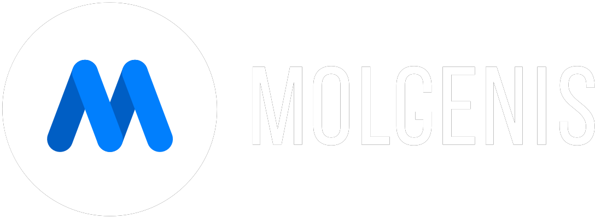

[Problem in one or two sentences, with the key term in bold.]
[What we built or found, with the main finding in pink.]
→ space next ← back F fullscreen

[The new part, drawn dashed.]
[Main message in one paragraph.]
[Limitation or what it depends on.]
[Author A et al. Title. Journal Year;Vol(Issue):pages.]
[Author B et al. Title. Journal Year.]